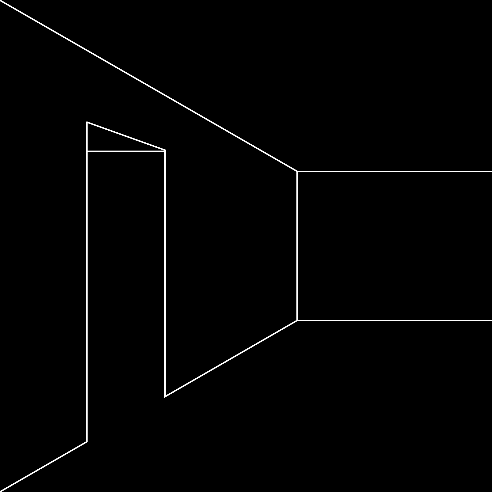

Easy and appropriate thing for a painter to say. Cy Twombly uses text in some of his drawings and paintings,
usually poetry, usually Dante. Many men and women have written long essays and lectures on the ideas they see expressed in Twombly’s work.